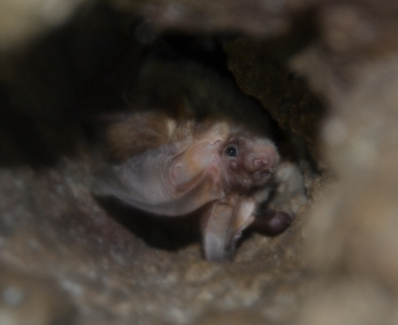

토끼박쥐

주요특징 및 설명
종명: 토끼박쥐(brown long-eared bat)
학명: Plecotus ognevi
생물학적 분류: 애기박쥐과 토끼박쥐속
분포: 한국, 러시아
등급: 멸종위기종 Ⅱ급
주요 특징
토끼박쥐는 '긴귀박쥐'라고도 한다. 주둥이는 짧고, 양쪽 귀의
밑부분이 이마를 통해 서로 접해 있다. 또한, 꼬리는 몸 전체 길이의 90%를 넘을 정도로 길다. 주로 경상북도나 강원도,
북한의 고산지대에서 서식한다.